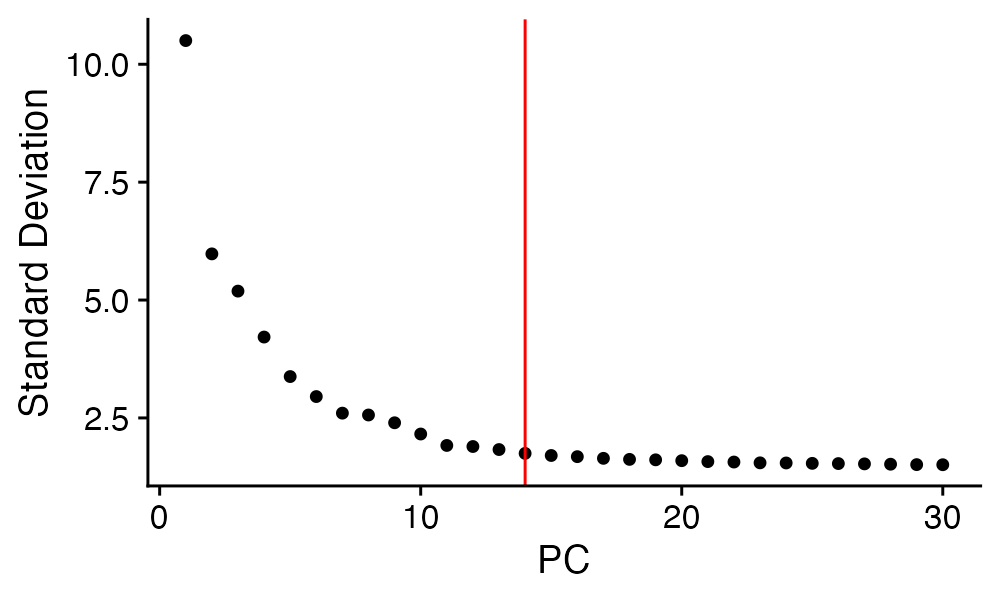

vignettes/BioYourOwnBowl-main.Rmd
BioYourOwnBowl-main.RmdBioYourOwnBowl provides a comprehensive pipeline for single-cell RNA-seq analysis using Seurat. This vignette demonstrates the main workflow using example data from article: https://pmc.ncbi.nlm.nih.gov/articles/PMC8376199/. To maximize the efficiency, this object is down-sampled and has metadata included.
The results from this notebook can be found in https://github.com/june-zhang-bioinfo/BioYourOwnBowl/tree/main/vignettes/main_workflow.
# Install from GitHub
remotes::install_github("june-zhang-bioinfo/BioYourOwnBowl")
library(BioYourOwnBowl)
library(Seurat)
#> Loading required package: SeuratObject
#> Loading required package: sp
#> 'SeuratObject' was built under R 4.4.0 but the current version is
#> 4.4.1; it is recomended that you reinstall 'SeuratObject' as the ABI
#> for R may have changed
#>
#> Attaching package: 'SeuratObject'
#> The following objects are masked from 'package:base':
#>
#> intersect, t
library(ggplot2)
library(dplyr)
#>
#> Attaching package: 'dplyr'
#> The following objects are masked from 'package:stats':
#>
#> filter, lag
#> The following objects are masked from 'package:base':
#>
#> intersect, setdiff, setequal, union
library(tidyr)
library(tibble)
library(circlize)
#> ========================================
#> circlize version 0.4.16
#> CRAN page: https://cran.r-project.org/package=circlize
#> Github page: https://github.com/jokergoo/circlize
#> Documentation: https://jokergoo.github.io/circlize_book/book/
#>
#> If you use it in published research, please cite:
#> Gu, Z. circlize implements and enhances circular visualization
#> in R. Bioinformatics 2014.
#>
#> This message can be suppressed by:
#> suppressPackageStartupMessages(library(circlize))
#> ========================================
library(grid)
library(eulerr)
library(RColorBrewer)
library(treemap)
library(stringr)
library(grDevices)
library(stats)
library(utils)
library(glue)
library(jsonlite)
library(Matrix)
#>
#> Attaching package: 'Matrix'
#> The following objects are masked from 'package:tidyr':
#>
#> expand, pack, unpack
library(harmony)
#> Loading required package: Rcpp
library(ComplexHeatmap)
#> ========================================
#> ComplexHeatmap version 2.25.2
#> Bioconductor page: http://bioconductor.org/packages/ComplexHeatmap/
#> Github page: https://github.com/jokergoo/ComplexHeatmap
#> Documentation: http://jokergoo.github.io/ComplexHeatmap-reference
#>
#> If you use it in published research, please cite either one:
#> - Gu, Z. Complex Heatmap Visualization. iMeta 2022.
#> - Gu, Z. Complex heatmaps reveal patterns and correlations in multidimensional
#> genomic data. Bioinformatics 2016.
#>
#>
#> The new InteractiveComplexHeatmap package can directly export static
#> complex heatmaps into an interactive Shiny app with zero effort. Have a try!
#>
#> This message can be suppressed by:
#> suppressPackageStartupMessages(library(ComplexHeatmap))
#> ========================================
library(pheatmap)
#>
#> Attaching package: 'pheatmap'
#> The following object is masked from 'package:ComplexHeatmap':
#>
#> pheatmap
library(anndata)
#>
#> Attaching package: 'anndata'
#> The following object is masked from 'package:SeuratObject':
#>
#> Layers
library(convert2anndata)
library(scCustomize)
#> scCustomize v3.2.2
#> If you find the scCustomize useful please cite.
#> See 'samuel-marsh.github.io/scCustomize/articles/FAQ.html' for citation info.
library(rlang)
#>
#> Attaching package: 'rlang'
#> The following objects are masked from 'package:jsonlite':
#>
#> flatten, unbox
library(matrixStats)
#>
#> Attaching package: 'matrixStats'
#> The following object is masked from 'package:dplyr':
#>
#> count
library(sessioninfo)
library(yaml)
#> Warning: package 'yaml' was built under R version 4.4.3We’ll start with loading example dataset.
data_dir_base <- system.file("extdata", package = "BioYourOwnBowl")
data_path <- file.path(data_dir_base, "GSE178756_downsampled.rds")
seurat_obj <- readRDS(data_path)
seurat_obj
#> An object of class Seurat
#> 18798 features across 10000 samples within 1 assay
#> Active assay: RNA (18798 features, 0 variable features)
#> 1 layer present: counts
colors <- c(
"#e6194B",
"#86D3B2",
"#5E8DBA",
"#F7A131",
"#911eb4",
"#46f0f0",
"#fabebe",
"#bcf60c",
"#B88C6D",
"#4d88e8",
"#FFFB47",
"#A1A74A",
"#7BB1A4",
"#b15928",
"#C493D4",
"#f58231",
"#0072B2",
"#D55E00",
"#009E73",
"#CC79A7",
"#F0E442"
)You can provide genes of interest. These genes will be used for Highly variable genes information (HVG_info.csv) and main-variance plot (so you can see if they are considered as variable features) and the dot plot for your clustering results.
selected_features <- c(
"CD8A", "CD8B",
"CD3D", "CD3E", "CD3G",
"GZMB", "GZMA", "GZMH",
"PRF1", "NKG7", "GNLY",
"IL2RA", "TNFRSF9", "CD69",
"MKI67", "TOP2A",
"PDCD1", "LAG3", "TIGIT",
"CTLA4", "HAVCR2",
"CCR7", "SELL", "TCF7",
"LEF1", "IL7R"
)The optimize_single_cell() function performs
comprehensive single-cell analysis:
seurat_obj <- optimize_single_cell(
object = seurat_obj,
# Normalization parameters
normalization.method = "LogNormalize",
vf.method = "vst",
model.use = "linear",
nfeatures = 2000,
# Quality control
mt.cutoff = 25,
gene_filter = 100,
# Clustering parameters
k_range = c(10, 20),
resolution_range = seq(0.1, 0.2, 0.05),
clusters_min = 6,
clusters_max = 9,
# UMAP parameters
min.dist = 0.7,
seed = 17,
# Regression (optional)
regress.out = NULL,
# Visualization
colors = colors,
cluster_distribution_layers = c("Time_point", "Cohort"),
cluster_distribution_layer_orders = list(
Time_point = c("Pre_Tx", "W4", "Post_Tx", "Normal")
),
# Selected features for visualization
features = selected_features,
# Output directory
out_dir = "/Users/zz005/Documents/github/R/vignettes_results"
)
#> Warning in dir.create(out_dir):
#> '/Users/zz005/Documents/github/R/vignettes_results' already exists
#> parameters saved to logs/params_20251216_162836.yaml
#> Session info saved to logs/session_info_20251216_162836.txt
#> Gene filtering done.
#> Normalizing layer: counts
#> Finding variable features for layer counts
#> Centering and scaling data matrix
#> Preprocess object done.
#> Warning: The default method for RunUMAP has changed from calling Python UMAP via reticulate to the R-native UWOT using the cosine metric
#> To use Python UMAP via reticulate, set umap.method to 'umap-learn' and metric to 'correlation'
#> This message will be shown once per session
#> 16:28:46 UMAP embedding parameters a = 0.9922 b = 1.112
#> 16:28:46 Read 10000 rows and found 30 numeric columns
#> 16:28:46 Using Annoy for neighbor search, n_neighbors = 30
#> 16:28:46 Building Annoy index with metric = cosine, n_trees = 50
#> 0% 10 20 30 40 50 60 70 80 90 100%
#> [----|----|----|----|----|----|----|----|----|----|
#> **************************************************|
#> 16:28:46 Writing NN index file to temp file /var/folders/tw/783hgvc55jv1b7mqflwpjc7h0000gp/T//RtmpSm6IMd/file1246e65789bed
#> 16:28:46 Searching Annoy index using 1 thread, search_k = 3000
#> 16:28:48 Annoy recall = 100%
#> 16:28:48 Commencing smooth kNN distance calibration using 1 thread with target n_neighbors = 30
#> 16:28:48 Initializing from normalized Laplacian + noise (using RSpectra)
#> 16:28:49 Commencing optimization for 500 epochs, with 470206 positive edges
#> 16:28:49 Using rng type: pcg
#> 16:28:58 Optimization finished
#> Computing nearest neighbor graph
#> Computing SNN
#> Modularity Optimizer version 1.3.0 by Ludo Waltman and Nees Jan van Eck
#>
#> Number of nodes: 10000
#> Number of edges: 356401
#>
#> Running Louvain algorithm...
#> Maximum modularity in 10 random starts: 0.7500
#> Number of communities: 25
#> Elapsed time: 0 seconds
#> Warning: The `slot` argument of `FetchData()` is deprecated as of SeuratObject 5.0.0.
#> ℹ Please use the `layer` argument instead.
#> ℹ The deprecated feature was likely used in the Seurat package.
#> Please report the issue at <https://github.com/satijalab/seurat/issues>.
#> This warning is displayed once every 8 hours.
#> Call `lifecycle::last_lifecycle_warnings()` to see where this warning was
#> generated.
#> Removing clusters: 18
#> Warning: `PackageCheck()` was deprecated in SeuratObject 5.0.0.
#> ℹ Please use `rlang::check_installed()` instead.
#> ℹ The deprecated feature was likely used in the Seurat package.
#> Please report the issue at <https://github.com/satijalab/seurat/issues>.
#> This warning is displayed once every 8 hours.
#> Call `lifecycle::last_lifecycle_warnings()` to see where this warning was
#> generated.
#> Picking joint bandwidth of 99.9
#> Gene filtering done.
#> Normalizing layer: counts
#> Finding variable features for layer counts
#> Centering and scaling data matrix
#> Warning: Different features in new layer data than already exists for
#> scale.data
#> Preprocess object done.
#> Warning in plot_mean_variance(object = object, features = features): The
#> following selected features were not found in the object: TNFRSF9, MKI67, TOP2A
#> Plot Mean-Variance done.
#> PC_ 1
#> Positive: TRAC, CCL5, TRBC2, NKG7, GZMA, CTSW, LTB, IL7R, CST7, GZMH
#> CD8B, KLRK1, KLRD1, CMC1, C12orf75, HOPX, CD7, KLRG1, TRGC2, GZMK
#> PRF1, GNLY, CD8A, CCL4, CD27, FGFBP2, LDHB, CD160, SYNE2, RHOH
#> Negative: FCN1, CYBB, SERPINA1, MNDA, IFI30, MPEG1, CST3, CPVL, CLEC7A, CD14
#> LYZ, VCAN, SPI1, CD68, NCF2, MS4A6A, CSTA, FCER1G, PLBD1, S100A9
#> KLF4, SLC7A7, LILRB2, HCK, CD36, FCGR2A, MARCKS, S100A8, S100A12, FGL2
#> PC_ 2
#> Positive: JUND, JUN, KLF2, ZFP36L2, CD69, DNAJB1, IL7R, H1FX, TSC22D3, CXCR4
#> STK17B, BTG1, TPT1, JUNB, FOS, DUSP1, TCF7, ARL4C, BTG2, TNFAIP3
#> LEPROTL1, FOXP1, MTRNR2L12, TMEM123, DUSP2, RCAN3, PPP1R15A, TOB1, LDHB, PABPC1
#> Negative: GZMH, NKG7, CCL5, FGFBP2, HLA.DRB1, FCGR3A, KLRD1, TYROBP, CD160, CMC1
#> FGR, GZMA, HLA.DPB1, SERPINA1, LYZ, GZMB, CSTA, GNLY, FCN1, HLA.DPA1
#> PRF1, CST3, S100A9, CST7, MNDA, IFI30, S100A8, HOPX, CD68, CLEC7A
#> PC_ 3
#> Positive: NKG7, CST7, CCL5, GZMA, GZMH, CTSW, KLRD1, PRF1, GZMB, GNLY
#> FGFBP2, CCL4, TRGC2, PLEK, KLRK1, EFHD2, HOPX, PFN1, C12orf75, CMC1
#> CD8A, KLRG1, ZEB2, HLA.DPB1, LYAR, SRGN, CX3CR1, S100A4, MATK, ADGRG1
#> Negative: LTB, SERINC5, RCAN3, CCR7, LEF1, TSHZ2, MAL, MAML2, IL6ST, IL7R
#> PRKCA, FHIT, TRABD2A, ACTN1, TXK, FOXP1, BEX3, BCL2, AIF1, SELL
#> NFKBIZ, IL6R, PIK3IP1, TNFRSF25, TIAM1, ADTRP, TCF7, MAP3K1, LRRN3, MTRNR2L12
#> PC_ 4
#> Positive: SYNE2, AHNAK, UTRN, HIST1H1E, VPS13C, SYNE1, ATF7IP, HIST1H1D, GBP5, KIAA1109
#> NIN, SLFN5, TRIP12, PIK3R1, MYBL1, GOLGB1, SETX, CEP350, SETD2, ITGA4
#> GOLGA4, CD84, ANKRD36C, DOCK10, GPRIN3, PYHIN1, BOD1L1, ZEB2, PCNX1, IQGAP1
#> Negative: ACTB, EEF1A1, PFN1, FXYD5, LDHB, FTH1, IFITM1, FTL, GAPDH, ACTG1
#> TRAC, EIF3E, EIF3L, GABARAP, NOSIP, CD7, HSPB1, GYPC, TRBC2, S100A6
#> CD27, FLT3LG, RGS10, PPA1, UCP2, ATP6V0C, FKBP1A, SLC25A5, PKM, PLP2
#> PC_ 5
#> Positive: S100A11, LTB, CRIP1, PLP2, LDHB, TRAC, S100A10, S100A4, S100A6, VIM
#> TNFSF10, NAP1L1, CAPG, ITGB1, SIT1, TRAT1, EEF1A1, RNASET2, CISH, TNFRSF4
#> CD82, CXCR3, STAT1, MAL, LGALS1, PKM, IL7R, FXYD5, TSPO, SUSD3
#> Negative: HSPA1B, HSPA1A, NR4A1, EGR1, RHOB, DUSP2, DUSP1, DNAJB1, ZFP36, HSPA6
#> MTRNR2L12, JUN, DNAJB4, PMAIP1, CD69, FOS, CSRNP1, NR4A2, RGS2, IER3
#> BTG2, TNF, NFKBIA, SERTAD1, DDIT3, JUND, NFKBIZ, ATF3, IER5, PPP1R15A
#> Top genes per PC exported to PCs_top-genes.csv
#> Elbow plot saved to /Users/zz005/Documents/github/R/vignettes_results/elbow.png
#> [1] 1 2 3 4 5 6 7 8 9 10 11 12 13 14
#> 16:29:08 UMAP embedding parameters a = 0.9922 b = 1.112
#> 16:29:08 Read 5893 rows and found 14 numeric columns
#> 16:29:08 Using Annoy for neighbor search, n_neighbors = 30
#> 16:29:08 Building Annoy index with metric = cosine, n_trees = 50
#> 0% 10 20 30 40 50 60 70 80 90 100%
#> [----|----|----|----|----|----|----|----|----|----|
#> **************************************************|
#> 16:29:08 Writing NN index file to temp file /var/folders/tw/783hgvc55jv1b7mqflwpjc7h0000gp/T//RtmpSm6IMd/file1246e24c7745b
#> 16:29:08 Searching Annoy index using 1 thread, search_k = 3000
#> 16:29:09 Annoy recall = 100%
#> 16:29:09 Commencing smooth kNN distance calibration using 1 thread with target n_neighbors = 30
#> 16:29:10 Initializing from normalized Laplacian + noise (using RSpectra)
#> 16:29:10 Commencing optimization for 500 epochs, with 245502 positive edges
#> 16:29:10 Using rng type: pcg
#> 16:29:15 Optimization finished
#> ---- Testing k.param = 10 ----
#> Computing nearest neighbor graph
#> Computing SNN
#> Running: k.param = 10 | resolution = 0.1
#> Modularity Optimizer version 1.3.0 by Ludo Waltman and Nees Jan van Eck
#>
#> Number of nodes: 5893
#> Number of edges: 86275
#>
#> Running Louvain algorithm...
#> Maximum modularity in 10 random starts: 0.9618
#> Number of communities: 6
#> Elapsed time: 0 seconds
#> ✅ Done: k.param = 10 | resolution = 0.1
#> Running: k.param = 10 | resolution = 0.15
#> Modularity Optimizer version 1.3.0 by Ludo Waltman and Nees Jan van Eck
#>
#> Number of nodes: 5893
#> Number of edges: 86275
#>
#> Running Louvain algorithm...
#> Maximum modularity in 10 random starts: 0.9522
#> Number of communities: 8
#> Elapsed time: 0 seconds
#> ✅ Done: k.param = 10 | resolution = 0.15
#> Running: k.param = 10 | resolution = 0.2
#> Modularity Optimizer version 1.3.0 by Ludo Waltman and Nees Jan van Eck
#>
#> Number of nodes: 5893
#> Number of edges: 86275
#>
#> Running Louvain algorithm...
#> Maximum modularity in 10 random starts: 0.9444
#> Number of communities: 10
#> Elapsed time: 0 seconds
#> Too many clusters (10); skipping higher resolutions.
#> ---- Testing k.param = 20 ----
#> Computing nearest neighbor graph
#> Computing SNN
#> Running: k.param = 20 | resolution = 0.1
#> Modularity Optimizer version 1.3.0 by Ludo Waltman and Nees Jan van Eck
#>
#> Number of nodes: 5893
#> Number of edges: 213559
#>
#> Running Louvain algorithm...
#> Maximum modularity in 10 random starts: 0.9594
#> Number of communities: 7
#> Elapsed time: 0 seconds
#> ✅ Done: k.param = 20 | resolution = 0.1
#> Running: k.param = 20 | resolution = 0.15
#> Modularity Optimizer version 1.3.0 by Ludo Waltman and Nees Jan van Eck
#>
#> Number of nodes: 5893
#> Number of edges: 213559
#>
#> Running Louvain algorithm...
#> Maximum modularity in 10 random starts: 0.9474
#> Number of communities: 7
#> Elapsed time: 0 seconds
#> ✅ Done: k.param = 20 | resolution = 0.15
#> Running: k.param = 20 | resolution = 0.2
#> Modularity Optimizer version 1.3.0 by Ludo Waltman and Nees Jan van Eck
#>
#> Number of nodes: 5893
#> Number of edges: 213559
#>
#> Running Louvain algorithm...
#> Maximum modularity in 10 random starts: 0.9380
#> Number of communities: 9
#> Elapsed time: 0 seconds
#> ✅ Done: k.param = 20 | resolution = 0.2
#> All clustering tests completed. Results saved to dimplot.pdf
#> [1] "k10_r0.1" "k10_r0.15" "k20_r0.1" "k20_r0.15" "k20_r0.2"
#>
#> 0 1 2 3 4 5
#> 2538 1306 1174 390 284 201
#> Calculating cluster 0
#> Warning: The `slot` argument of `GetAssayData()` is deprecated as of SeuratObject 5.0.0.
#> ℹ Please use the `layer` argument instead.
#> ℹ The deprecated feature was likely used in the Seurat package.
#> Please report the issue at <https://github.com/satijalab/seurat/issues>.
#> This warning is displayed once every 8 hours.
#> Call `lifecycle::last_lifecycle_warnings()` to see where this warning was
#> generated.
#> For a (much!) faster implementation of the Wilcoxon Rank Sum Test,
#> (default method for FindMarkers) please install the presto package
#> --------------------------------------------
#> install.packages('devtools')
#> devtools::install_github('immunogenomics/presto')
#> --------------------------------------------
#> After installation of presto, Seurat will automatically use the more
#> efficient implementation (no further action necessary).
#> This message will be shown once per session
#> Calculating cluster 1
#> Calculating cluster 2
#> Calculating cluster 3
#> Calculating cluster 4
#> Calculating cluster 5
#> Warning: The following requested variables were not found: TNFRSF9, MKI67,
#> TOP2A
#> Scale for colour is already present.
#> Adding another scale for colour, which will replace the existing scale.
#> Scale for colour is already present.
#> Adding another scale for colour, which will replace the existing scale.
#> Centering and scaling data matrix
#> Warning: Different features in new layer data than already exists for
#> scale.data
#> Automatically calculated height: 9.2 inches for 150 genes
#> `use_raster` is automatically set to TRUE for a matrix with more than
#> 2000 columns You can control `use_raster` argument by explicitly
#> setting TRUE/FALSE to it.
#>
#> Set `ht_opt$message = FALSE` to turn off this message.
#> 'magick' package is suggested to install to give better rasterization.
#>
#> Set `ht_opt$message = FALSE` to turn off this message.
#> Heatmap saved to k10_r0.1_heatmap.png
#>
#> 0 1 2 3 4 5 6 7
#> 1447 1285 1213 785 424 284 254 201
#> Calculating cluster 0
#> Calculating cluster 1
#> Calculating cluster 2
#> Calculating cluster 3
#> Calculating cluster 4
#> Calculating cluster 5
#> Calculating cluster 6
#> Calculating cluster 7
#> Warning: The following requested variables were not found: TNFRSF9, MKI67,
#> TOP2A
#> Scale for colour is already present.
#> Adding another scale for colour, which will replace the existing scale.
#> Scale for colour is already present.
#> Adding another scale for colour, which will replace the existing scale.
#> Centering and scaling data matrix
#> Warning: Different features in new layer data than already exists for
#> scale.data
#> Automatically calculated height: 10.84 inches for 191 genes
#> `use_raster` is automatically set to TRUE for a matrix with more than
#> 2000 columns You can control `use_raster` argument by explicitly
#> setting TRUE/FALSE to it.
#>
#> Set `ht_opt$message = FALSE` to turn off this message.
#> 'magick' package is suggested to install to give better rasterization.
#>
#> Set `ht_opt$message = FALSE` to turn off this message.
#> Heatmap saved to k10_r0.15_heatmap.png
#>
#> 0 1 2 3 4 5 6
#> 2558 1292 1172 396 218 199 58
#> Calculating cluster 0
#> Calculating cluster 1
#> Calculating cluster 2
#> Calculating cluster 3
#> Calculating cluster 4
#> Calculating cluster 5
#> Calculating cluster 6
#> Warning: The following requested variables were not found: TNFRSF9, MKI67,
#> TOP2A
#> Scale for colour is already present.
#> Adding another scale for colour, which will replace the existing scale.
#> Scale for colour is already present.
#> Adding another scale for colour, which will replace the existing scale.
#> Centering and scaling data matrix
#> Warning: Different features in new layer data than already exists for
#> scale.data
#> Automatically calculated height: 10.2 inches for 175 genes
#> `use_raster` is automatically set to TRUE for a matrix with more than
#> 2000 columns You can control `use_raster` argument by explicitly
#> setting TRUE/FALSE to it.
#>
#> Set `ht_opt$message = FALSE` to turn off this message.
#> 'magick' package is suggested to install to give better rasterization.
#>
#> Set `ht_opt$message = FALSE` to turn off this message.
#> Heatmap saved to k20_r0.1_heatmap.png
#>
#> 0 1 2 3 4 5 6
#> 1645 1302 1299 1172 218 199 58
#> Calculating cluster 0
#> Calculating cluster 1
#> Calculating cluster 2
#> Calculating cluster 3
#> Calculating cluster 4
#> Calculating cluster 5
#> Calculating cluster 6
#> Warning: The following requested variables were not found: TNFRSF9, MKI67,
#> TOP2A
#> Scale for colour is already present.
#> Adding another scale for colour, which will replace the existing scale.
#> Scale for colour is already present.
#> Adding another scale for colour, which will replace the existing scale.
#> Centering and scaling data matrix
#> Warning: Different features in new layer data than already exists for
#> scale.data
#> Automatically calculated height: 10.08 inches for 172 genes
#> `use_raster` is automatically set to TRUE for a matrix with more than
#> 2000 columns You can control `use_raster` argument by explicitly
#> setting TRUE/FALSE to it.
#>
#> Set `ht_opt$message = FALSE` to turn off this message.
#> 'magick' package is suggested to install to give better rasterization.
#>
#> Set `ht_opt$message = FALSE` to turn off this message.
#> Heatmap saved to k20_r0.15_heatmap.png
#>
#> 0 1 2 3 4 5 6 7 8
#> 1389 1300 1172 882 426 249 218 199 58
#> Calculating cluster 0
#> Calculating cluster 1
#> Calculating cluster 2
#> Calculating cluster 3
#> Calculating cluster 4
#> Calculating cluster 5
#> Calculating cluster 6
#> Calculating cluster 7
#> Calculating cluster 8
#> Warning: The following requested variables were not found: TNFRSF9, MKI67,
#> TOP2A
#> Scale for colour is already present.
#> Adding another scale for colour, which will replace the existing scale.
#> Scale for colour is already present.
#> Adding another scale for colour, which will replace the existing scale.
#> Centering and scaling data matrix
#> Warning: Different features in new layer data than already exists for
#> scale.data
#> Automatically calculated height: 11.84 inches for 216 genes
#> `use_raster` is automatically set to TRUE for a matrix with more than
#> 2000 columns You can control `use_raster` argument by explicitly
#> setting TRUE/FALSE to it.
#>
#> Set `ht_opt$message = FALSE` to turn off this message.
#> 'magick' package is suggested to install to give better rasterization.
#>
#> Set `ht_opt$message = FALSE` to turn off this message.
#> Heatmap saved to k20_r0.2_heatmap.png
seurat_obj
#> An object of class Seurat
#> 9029 features across 5893 samples within 1 assay
#> Active assay: RNA (9029 features, 2000 variable features)
#> 3 layers present: counts, data, scale.data
#> 2 dimensional reductions calculated: pca, umap"vst": Variance stabilizing transformation
(default)"dispersion": Dispersion-based selection"pseudobulk": Pseudobulk aggregation"sct": SCTransform"anchor": Integration anchorsThe function tests multiple clustering parameters:
The pipeline generates:
logs/ - Parameters and session infoqc.pdf - Quality control plotsHVG_info.csv - The ranking of variable features and the
number of cells express themelbow.png - PC selection plotMean-variance_*.png - Variable feature plotsPCs_top-genes.csv - Top genes per principal
componentdimplot.pdf - Dimplots showing clustering resultsk*_r*_barplot.png - Cluster distribution plotsk*_r*_dotplot.pdf - Dot plots for each clustering,
including selected features and DGEk*_r*_heatmap.png - Expression heatmaps for DGEobject.rds - Final processed Seurat objectn* are used to trace the dimension changes over the steps.
# Define your variables
output_dir <- "your/path"
gene_filter = 50
vf.method = "dispersion"
regress.out = c("MKI67")
pdf("qc.pdf")
n1 <- dim(object)[1]
object <- filter_genes_by_expression(object, gene_filter = gene_filter, assay = "RNA")
n2 <- dim(object)[1]
# cluster-based cell filtering
object <- preprocess_obj(object,
vf.method = vf.method,
nfeatures = nfeatures,
regress.out = regress.out)
object <- RunPCA(object, npcs = 30, verbose = F)
object <- RunUMAP(object, reduction = reduction, dims = 1:30, seed.use = seed)
object <- FindNeighbors(object, dims = 1:30)
object <- FindClusters(object, resolution = 2)
print(DimPlot(object, label = TRUE, label.box = TRUE))
print(FeaturePlot(object, features = "percent.mt"))
print(FeaturePlot(object, features = "nCount_RNA"))
n4 <- dim(object)[2]
object <- remove_low_quality_clusters(object)
object <- subset(object, percent.mt < 25)
n5 <- dim(object)[2]
grid.newpage()
grid.draw(grid.text(
paste0("Cells before QC:", n4, "\n",
"Cells after QC:", n5),
x = 0.5, y = 0.6
))
object <- filter_genes_by_expression(object, gene_filter = gene_filter)
n3 <- dim(object)[1]
grid.draw(grid.text(
paste0("Genes before filtering:", n1, "\n",
"Genes after 1st filtering:", n2, "\n",
"Genes after 2nd filtering", n3),
x = 0.5, y = 0.4
))
dev.off()
pdf("qc.pdf")
# gene filtering
n1 <- dim(object)[1]
object <- filter_genes_by_expression(object, gene_filter = gene_filter, assay = "RNA")
n2 <- dim(object)[1]
# choose cutoff based on violin plot
Vlnplot(object, features = c("nFeature_RNA", "nCount_RNA", "percent.mt"))
n3 <- dim(object)[2]
obj <- subset(object, nFeature_RNA > 100 & nCount_RNA < 2000 & percent.mt < 25)
n4 <- dim(object)[2]
grid.draw(grid.text(
paste0("Cells before QC:", n3, "\n",
"Cells after QC:", n4),
x = 0.5, y = 0.6
))
object <- filter_genes_by_expression(object, gene_filter = gene_filter, assay = "RNA")
n5 <- dim(object)[1]
grid.newpage()
grid.draw(grid.text(
paste0("Genes before filtering:", n1, "\n",
"Genes after 1st filtering", n2, "\n",
"Genes after 2nd filtering", n5),
x = 0.5, y = 0.4
))
dev.off()
object <- preprocess_obj(object,
vf.method = vf.method,
nfeatures = nfeatures,
regress.out = regress.out)
# export gene rank - conditionally applicable
hvf <- HVFInfo(object)
hvf$gene <- rownames(hvf)
hvf <- hvf[order(hvf$mvp.dispersion, decreasing = T), ]
hvf$rank <- 1:nrow(hvf)
hvf$features <- "No"
hvf$features[hvf$gene %in% features] <- "Yes"
expr_matrix <- GetAssayData(object, layer = "counts")
gene_cell_counts <- Matrix::rowSums(expr_matrix > 0)
hvf$num_cells_expressed <- gene_cell_counts[match(hvf$gene, names(gene_cell_counts))]
write.csv(hvf, "HVG_info.csv")
# generate mean-variance plot
plot_mean_variance(
object = object,
features = selected_features
)
object <- RunPCA(object, npcs = 30)
# export top genes per PC
export_top_pc_genes(object, reduction = "pca", top_n = 20, n_pcs = 30, file_name = "PCs_top-genes.csv")
dims <- select_PCs(object,
improved_diff_quantile = improved_diff_quantile)
print(dims)
# You can also choose PCs based on what you prefer, according to top genes per PC.
# e.g. you think PC3, PC4 and PC5 represent unwanted noise.
dims <- c(1:2, 5:10)
object <- RunUMAP(object, reduction = "pca", dims = dims, seed.use = 123)
object <- clustering(object,
colors = colors,
k_range = seq(20, 50, 10),
resolution_range = seq(0.1, 0.4, 0.05),
dims = dims,
clusters_min = 6,
clusters_max = 9)
# see what k and r combinations meet your expectation
clusters <- grep("^k\\d+_r\\d+\\.\\d+$", colnames(object@meta.data), value = TRUE)
print(clusters)
for(temp_clusters in clusters){
Idents(object) <- temp_clusters
print(table(Idents(object)))
plots <- stacked_bar_plots(
object = object,
idents = temp_clusters,
layers = c("Time_point", "Cohort"),
layer_orders = list(
Time_point = c("Pre_Tx", "W4", "Post_Tx", "Normal")
),
colors = colors,
title = "Cluster Distribution"
)
n_layers <- object[[c("Time_point", "Cohort")]] %>% unlist() %>% as.character %>% unique() %>% length()
width <- 5 + 0.3 * n_layers
ggsave(paste0(temp_clusters, "_barplot.png"), plot = plots, width = width, height = 5.5, dpi = 300)
# DGE
markers <- FindAllMarkers(object, min.pct = 0.25)
dge <- select_marker_genes_score(markers)
dotplots_pdf(
object = object,
features.1 = features,
features.2 = dge$gene,
file_name = paste0(temp_clusters, "_dotplot.pdf")
)
# swap cell-level heatmap with pseodubulk-level
heatmap_pseudobulk(object,
features = dge$gene,
groups = "Patient",
idents = temp_clusters,
colors,
file_name = paste0(temp_clusters, "_heatmap.png"))
}
sessionInfo()
#> R version 4.4.1 (2024-06-14)
#> Platform: aarch64-apple-darwin20
#> Running under: macOS 26.1
#>
#> Matrix products: default
#> BLAS: /Library/Frameworks/R.framework/Versions/4.4-arm64/Resources/lib/libRblas.0.dylib
#> LAPACK: /Library/Frameworks/R.framework/Versions/4.4-arm64/Resources/lib/libRlapack.dylib; LAPACK version 3.12.0
#>
#> locale:
#> [1] en_US.UTF-8/en_US.UTF-8/en_US.UTF-8/C/en_US.UTF-8/en_US.UTF-8
#>
#> time zone: America/New_York
#> tzcode source: internal
#>
#> attached base packages:
#> [1] grid stats graphics grDevices datasets utils methods
#> [8] base
#>
#> other attached packages:
#> [1] future_1.68.0 yaml_2.3.11
#> [3] sessioninfo_1.2.3 matrixStats_1.5.0
#> [5] rlang_1.1.6 scCustomize_3.2.2
#> [7] convert2anndata_0.2.0 anndata_0.8.0
#> [9] pheatmap_1.0.13 ComplexHeatmap_2.25.2
#> [11] harmony_1.2.4 Rcpp_1.1.0
#> [13] Matrix_1.7-0 jsonlite_2.0.0
#> [15] glue_1.8.0 stringr_1.6.0
#> [17] treemap_2.4-4 RColorBrewer_1.1-3
#> [19] eulerr_7.0.4 circlize_0.4.16
#> [21] tibble_3.3.0 tidyr_1.3.1
#> [23] dplyr_1.1.4 ggplot2_3.5.2
#> [25] Seurat_5.1.0 SeuratObject_5.2.0
#> [27] sp_2.2-0 BioYourOwnBowl_0.0.0.9000
#>
#> loaded via a namespace (and not attached):
#> [1] RcppAnnoy_0.0.22 splines_4.4.1
#> [3] later_1.4.4 polyclip_1.10-7
#> [5] janitor_2.2.1 fastDummies_1.7.5
#> [7] lifecycle_1.0.4 rstatix_0.7.3
#> [9] doParallel_1.0.17 globals_0.18.0
#> [11] lattice_0.22-6 MASS_7.3-60.2
#> [13] backports_1.5.0 magrittr_2.0.4
#> [15] plotly_4.11.0 sass_0.4.10
#> [17] rmarkdown_2.30 jquerylib_0.1.4
#> [19] httpuv_1.6.16 otel_0.2.0
#> [21] sctransform_0.4.2 spam_2.11-1
#> [23] spatstat.sparse_3.1-0 EnhancedVolcano_1.20.0
#> [25] reticulate_1.44.1 cowplot_1.2.0
#> [27] pbapply_1.7-4 lubridate_1.9.4
#> [29] abind_1.4-8 zlibbioc_1.52.0
#> [31] Rtsne_0.17 GenomicRanges_1.58.0
#> [33] purrr_1.2.0 BiocGenerics_0.52.0
#> [35] GenomeInfoDbData_1.2.13 IRanges_2.40.1
#> [37] S4Vectors_0.44.0 ggrepel_0.9.6
#> [39] irlba_2.3.5.1 listenv_0.10.0
#> [41] spatstat.utils_3.2-0 goftest_1.2-3
#> [43] RSpectra_0.16-2 spatstat.random_3.4-3
#> [45] fitdistrplus_1.2-4 parallelly_1.45.1
#> [47] pkgdown_2.2.0 leiden_0.4.3.1
#> [49] codetools_0.2-20 getopt_1.20.4
#> [51] DelayedArray_0.32.0 tidyselect_1.2.1
#> [53] shape_1.4.6.1 UCSC.utils_1.2.0
#> [55] farver_2.1.2 stats4_4.4.1
#> [57] spatstat.explore_3.6-0 GetoptLong_1.1.0
#> [59] Formula_1.2-5 progressr_0.18.0
#> [61] ggridges_0.5.7 survival_3.6-4
#> [63] iterators_1.0.14 systemfonts_1.3.1
#> [65] foreach_1.5.2 tools_4.4.1
#> [67] ragg_1.5.0 ica_1.0-3
#> [69] gridExtra_2.3 SparseArray_1.6.2
#> [71] xfun_0.54 MatrixGenerics_1.18.1
#> [73] GenomeInfoDb_1.42.3 withr_3.0.2
#> [75] fastmap_1.2.0 digest_0.6.39
#> [77] timechange_0.3.0 R6_2.6.1
#> [79] mime_0.13 ggprism_1.0.7
#> [81] textshaping_1.0.4 colorspace_2.1-2
#> [83] Cairo_1.7-0 scattermore_1.2
#> [85] tensor_1.5.1 spatstat.data_3.1-9
#> [87] generics_0.1.4 renv_1.1.0
#> [89] data.table_1.17.8 httr_1.4.7
#> [91] htmlwidgets_1.6.4 S4Arrays_1.6.0
#> [93] uwot_0.2.4 pkgconfig_2.0.3
#> [95] gtable_0.3.6 lmtest_0.9-40
#> [97] SingleCellExperiment_1.28.1 XVector_0.46.0
#> [99] htmltools_0.5.9 carData_3.0-5
#> [101] dotCall64_1.2 clue_0.3-66
#> [103] scales_1.4.0 Biobase_2.66.0
#> [105] png_0.1-8 optparse_1.7.5
#> [107] snakecase_0.11.1 spatstat.univar_3.1-5
#> [109] knitr_1.50 rstudioapi_0.17.1
#> [111] reshape2_1.4.5 rjson_0.2.23
#> [113] nlme_3.1-164 cachem_1.1.0
#> [115] zoo_1.8-14 GlobalOptions_0.1.3
#> [117] KernSmooth_2.23-24 vipor_0.4.7
#> [119] parallel_4.4.1 miniUI_0.1.2
#> [121] ggrastr_1.0.2 desc_1.4.3
#> [123] pillar_1.11.1 vctrs_0.6.5
#> [125] RANN_2.6.2 ggpubr_0.6.2
#> [127] promises_1.5.0 car_3.1-3
#> [129] xtable_1.8-4 cluster_2.1.6
#> [131] paletteer_1.6.0 beeswarm_0.4.0
#> [133] evaluate_1.0.5 cli_3.6.5
#> [135] compiler_4.4.1 crayon_1.5.3
#> [137] ggsignif_0.6.4 future.apply_1.20.0
#> [139] labeling_0.4.3 rematch2_2.1.2
#> [141] forcats_1.0.1 ggbeeswarm_0.7.3
#> [143] plyr_1.8.9 fs_1.6.6
#> [145] stringi_1.8.7 gridBase_0.4-7
#> [147] viridisLite_0.4.2 deldir_2.0-4
#> [149] assertthat_0.2.1 lazyeval_0.2.2
#> [151] spatstat.geom_3.6-1 RcppHNSW_0.6.0
#> [153] patchwork_1.3.2 shiny_1.12.0
#> [155] SummarizedExperiment_1.36.0 ROCR_1.0-11
#> [157] broom_1.0.11 igraph_2.2.1
#> [159] bslib_0.9.0